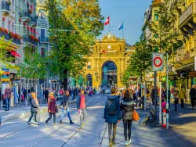

Zúrich, capital de Suiza es una de las ciudades con mayor calidad de vida en el mundo y mejores sueldos, siendo así una de las más caras para vivir. Su índice de criminalidad es bajisimo, tienen un panorama cultural extenso y unas medidas eficaces contra la contaminación.
Bahnhofstrasse es la calle más importante del centro de Zúrich y una de las calles de tiendas más caras y exclusivas del mundo. En 2011, un estudio clasificó a Bahnhofstrasse la calle más cara de Europa para los comercios, y la tercera más cara del mundo.

La mayor parte de las tiendas de la calle Bahnhofstrasse se escapan de los presupuestos de la mayoría de los visitantes de la ciudad, pero mirar es gratis, y resulta un auténtico placer recorrer la avenida deleitándose con sus escaparates cuidados al detalle.
En la actualidad se ha convertido en un popular destino para disfrutar de la naturaleza con cada rayo de sol que decide asomarse con sigilo sobre sus aguas,fuente de vida y portador de encanto, el lago de Zúrich se extiende sobre el sur de la ciudad.
La mejor forma de explorar el lago de Zúrich es hacerlo con un paseo en barco, de este modo vas a poder recorrer la costa de cerca y disfrutar de la posibilidad de bajar en los pueblecitos que más te gusten para conocer uno de los aspectos con más encanto de Zúrich y de toda Suiza.